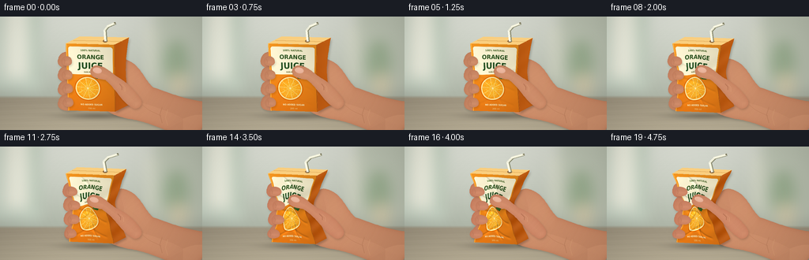
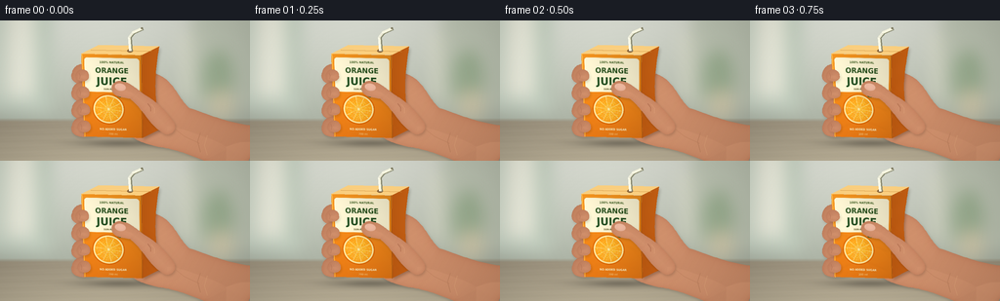

CODING AGENTS AS PIXEL WORLD MODELS
traex/GPT-6.1-Sol · mechanics_0019
点击播放 · 原生 RGB 像素
逐轮保存的候选
回放视频、检查图与代码变化。
每份候选均可单独播放。实际图片检查记录在下方工具轨迹中。
候选 01播放与检查图
点击播放 · 原生 RGB 像素


展开代码变化
--- 上一保存版本
+++ 本次保存版本
@@ -0,0 +1,280 @@
+from pathlib import Path
+import json, math
+import numpy as np
+from PIL import Image, ImageDraw, ImageFont, ImageFilter
+import cv2
+import artifact_io
+
+ROOT=Path(__file__).resolve().parent
+SPEC=json.loads((ROOT/'task_spec.json').read_text())
+S=3
+W,H=SPEC['width']*S,SPEC['height']*S
+rng=np.random.default_rng(1729)
+Y,X=np.mgrid[0:H,0:W].astype(np.float32); X/=S; Y/=S
+noise=rng.normal(0,1,(H,W)).astype(np.float32)
+
+def maskpath(points):
+ im=Image.new('L',(W,H)); d=ImageDraw.Draw(im)
+ d.polygon([(int(x*S),int(y*S)) for x,y in points],fill=255)
+ return np.array(im,dtype=np.float32)/255
+
+def bezier_path(start, curves):
+ pts=[start]; a=np.array(start,dtype=float)
+ for c1,c2,end in curves:
+ b,c,e=np.array(c1),np.array(c2),np.array(end)
+ for t in np.linspace(0,1,25)[1:]:
+ pts.append(tuple((1-t)**3*a+3*(1-t)**2*t*b+3*(1-t)*t*t*c+t**3*e))
+ a=e
+ return pts
+
+def line(im,pts,fill,width=1):
+ ImageDraw.Draw(im).line([(round(x*S),round(y*S)) for x,y in pts],fill=fill,width=max(1,round(width*S)),joint='curve')
+
+def composite(base,col,alpha):
+ return base*(1-alpha[...,None])+np.asarray(col)*alpha[...,None]
+
+def shadow(base,mask,dx=1,dy=2,sigma=2,strength=.3):
+ m=cv2.warpAffine(mask,np.array([[1,0,dx*S],[0,1,dy*S]],np.float32),(W,H))
+ m=cv2.GaussianBlur(m,(0,0),sigma*S)
+ return base*(1-m[...,None]*strength)
+
+# Shallow-focus, softly lit kitchen interior.
+bg=np.zeros((H,W,3),np.float32)
+t=(Y/144)[...,None]
+bg[:]=np.array([208,211,201])*(1-t)+np.array([153,162,146])*t
+back=Image.fromarray(bg.astype(np.uint8)); d=ImageDraw.Draw(back)
+d.rectangle([0,0,52*S,94*S], fill=(194,206,191))
+d.rectangle([5*S,0,35*S,78*S], fill=(228,229,214))
+d.rectangle([43*S,0,47*S,83*S], fill=(159,174,154))
+d.rectangle([196*S,0,256*S,93*S],fill=(186,193,176))
+d.rectangle([187*S,12*S,193*S,82*S],fill=(222,222,201))
+d.ellipse([207*S,30*S,239*S,90*S],fill=(152,171,142))
+d.ellipse([214*S,70*S,239*S,103*S],fill=(202,195,167))
+back=back.filter(ImageFilter.GaussianBlur(8*S)); bg=np.asarray(back,dtype=np.float32)
+transition=np.clip((Y-100)/4,0,1)[...,None]
+counter=np.zeros_like(bg); counter[:]=np.array([152,142,122])+((Y-101)/43)[...,None]*np.array([30,30,26])
+counter+= (1.2*np.sin(Y*.85)+.6*np.sin(Y*2+X*.09))[...,None]
+bg=bg*(1-transition)+counter*transition
+bg+=noise[...,None]*.4
+bg+=np.exp(-((X-75)**2+(Y-20)**2)/11000)[...,None]*13
+
+# High-resolution printed carton, later warped with the folded paper.
+TW,TH=360,540
+tex=Image.new('RGB',(TW,TH)); a=np.zeros((TH,TW,3),np.float32)
+ty,tx=np.mgrid[0:TH,0:TW]
+a[:]=np.array([238,126,25])+(1-ty/TH)[...,None]*np.array([7,25,10])
+a+=rng.normal(0,.6,(TH,TW,1)); tex=Image.fromarray(np.uint8(np.clip(a,0,255)))
+d=ImageDraw.Draw(tex)
+font='/usr/share/fonts/truetype/dejavu/DejaVuSansCondensed-Bold.ttf'
+font2='/usr/share/fonts/truetype/dejavu/DejaVuSans.ttf'
+def txtcenter(text,y,size,color,fontpath=font):
+ f=ImageFont.truetype(fontpath,size)
+ box=d.textbbox((0,0),text,font=f)
+ d.text(((TW-(box[2]-box[0]))/2,y),text,font=f,fill=color)
+d.rounded_rectangle((17,23,TW-17,245),radius=18,fill=(255,247,213))
+txtcenter('100% NATURAL',41,19,(71,102,42))
+txtcenter('ORANGE',78,47,(46,85,35))
+txtcenter('JUICE',135,69,(38,82,37))
+txtcenter('SUN-RIPENED',218,15,(105,103,53))
+# Orange cut face, rendered with radial pulp and dimensional rind.
+cx,cy,r=154,357,98
+for rr in range(r,0,-1):
+ if rr>91: col=(216+int((r-rr)*3),87+int((r-rr)*8),10)
+ elif rr>82: col=(255,231,164)
+ else: col=(255,164+int((82-rr)*.22),32)
+ d.ellipse((cx-rr,cy-rr,cx+rr,cy+rr), fill=col)
+for seg in range(10):
+ aa=seg*math.tau/10+.14
+ d.line((cx,cy,cx+81*math.cos(aa),cy+81*math.sin(aa)), fill=(255,224,136),width=4)
+for k in range(500):
+ ang=rng.uniform(0,math.tau); rr=rng.uniform(9,77)
+ xx=cx+rr*math.cos(ang); yy=cy+rr*math.sin(ang)
+ cc=(255,int(rng.uniform(172,219)),int(rng.uniform(50,95)))
+ d.ellipse((xx-1,yy-2,xx+2,yy+2),fill=cc)
+d.ellipse((cx-6,cy-6,cx+6,cy+6),fill=(255,236,164))
+d.polygon([(211,273),(233,236),(285,248),(266,273),(226,279)],fill=(53,107,42))
+d.line([(222,273),(273,249)],fill=(142,174,65),width=3)
+txtcenter('NO ADDED SUGAR',477,18,(255,245,204))
+txtcenter('200 ml',509,16,(253,230,168),font2)
+texture=np.array(tex,dtype=np.float32)
+
+# Anatomical skin volumes: broad palm, rounded finger pads, tapered thumb.
+def skin(base,points,kind='palm',redden=0):
+ m=maskpath(points)
+ dist=cv2.distanceTransform((m*255).astype(np.uint8),cv2.DIST_L2,5)/S
+ # Thickness makes the silhouette darker, with a soft upper-left key light.
+ gx=cv2.Sobel(dist,cv2.CV_32F,1,0,ksize=3)/8*S
+ gy=cv2.Sobel(dist,cv2.CV_32F,0,1,ksize=3)/8*S
+ shade=1-.20*np.exp(-dist/2.7)-.052*gx-.072*gy
+ shade+=.048*np.exp(-((X-162)**2+(Y-75)**2)/1800)
+ col=np.zeros_like(base); col[:]=[205,143,108]
+ col+=shade[...,None]*np.array([55,51,43])-np.array([55,51,43])
+ col[...,0]+=redden*3
+ col[...,1]-=redden*4
+ col+=(.65*noise+.25*np.sin(X*3.5+Y*1.3))[...,None]
+ col+=np.exp(-dist/5)[...,None]*np.array([1,-3,-3])
+ base=shadow(base,m,1,1.5,1.4,.15)
+ return composite(base,np.clip(col,0,255),m),m
+
+def nail(base,center,angle,length=12,width=8):
+ dx=X-center[0];dy=Y-center[1]; ca=math.cos(angle);sa=math.sin(angle)
+ xx=dx*ca+dy*sa; yy=-dx*sa+dy*ca
+ q=(xx/(length/2))**2+(yy/(width/2))**2
+ m=np.clip((1-q)*5,0,1)
+ edge=np.clip(q,0,1)
+ col=np.zeros_like(base);col[:]=[227,174,150]
+ col+=((1-edge)*8-yy*.9)[...,None]
+ # Fine white free edge at the fingertip.
+ rim=np.exp(-((xx+length*.4)/.5)**2)*m*.40
+ col=col*(1-rim[...,None])+np.array([245,219,192])*rim[...,None]
+ return composite(base,col,m)
+
+def front_xy(u,v,p):
+ s=np.maximum(np.sin(np.pi*np.clip(v,0,1)),0)
+ left=83+3*v+p*(12*s**1.3+2*v+1.8*np.sin(v*6*np.pi)*s)
+ right=145+1*v-p*(15*s**1.5+3*v+2*np.sin(v*5*np.pi)*s)
+ x=left+(right-left)*u+p*2.1*np.sin(np.pi*u)*np.sin(v*4*np.pi)
+ y=34+85*v+u*1.5+p*(2.5*v+3.0*np.sin(np.pi*v)*np.sin(3*np.pi*u)+1.5*u)
+ return x,y
+
+def front(base,p):
+ # Inverse of a deforming ruled surface, solved without a renderer.
+ u=(X-83)/62;v=(Y-34)/85
+ for it in range(7):
+ xx,yy=front_xy(u,v,p)
+ xdu,ydu=front_xy(u+.001,v,p); xdv,ydv=front_xy(u,v+.001,p)
+ a=(xdu-xx)/.001;b=(xdv-xx)/.001;c=(ydu-yy)/.001;dd=(ydv-yy)/.001
+ det=a*dd-b*c;det=np.where(abs(det)<1,1,det)
+ ex=X-xx;ey=Y-yy
+ u+=np.clip((dd*ex-b*ey)/det,-.3,.3)
+ v+=np.clip((a*ey-c*ex)/det,-.3,.3)
+ m=((u>=0)&(u<=1)&(v>=0)&(v<=1)).astype(np.float32)
+ col=cv2.remap(texture,(np.clip(u,0,1)*(TW-1)).astype(np.float32),(np.clip(v,0,1)*(TH-1)).astype(np.float32),cv2.INTER_LINEAR)
+ light=1.01-.14*u+.025*np.sin(v*np.pi)
+ # Crisp diagonal buckling creases converge where the gripping pads push.
+ folds=[(.03,.23,.52,.43,1),(.05,.46,.58,.59,-1),(.07,.69,.49,.58,1),(.06,.91,.65,.73,-1),(.97,.35,.59,.46,-1),(.95,.68,.50,.57,1),(.91,.90,.46,.78,1),(.29,.03,.59,.25,-1),(.5,.7,.7,.94,-1)]
+ for x1,y1,x2,y2,sg in folds:
+ vx=x2-x1;vy=y2-y1;ln=math.sqrt(vx*vx+vy*vy)
+ along=((u-x1)*vx+(v-y1)*vy)/(ln*ln)
+ distance=((u-x1)*vy-(v-y1)*vx)/ln
+ env=np.clip(np.minimum(along*8,(1-along)*8),0,1)
+ light+=p*env*(-.19*np.exp(-(distance/.014)**2)+.115*np.exp(-((distance-sg*.025)/.025)**2))
+ light+=p*.06*np.sin(29*v+5*u)*np.maximum(np.sin(np.pi*v),0)*np.abs(2*u-1)
+ light-=p*.13*np.exp(-((u-.71)/.23)**2-((v-.42)/.20)**2)
+ col*=np.clip(light,.55,1.22)[...,None]
+ base=composite(base,col,m)
+ return base,m
+
+frames=[]
+for frame in range(SPEC['frames']):
+ t=frame/(SPEC['frames']-1)
+ # Time-lapse compression steadily increases, without returning to the original shape.
+ p=(t*t*(3-2*t))*.98
+ im=bg.copy()
+ # Ground contact shadow, held just above the countertop.
+ sh=np.exp(-(((X-124)/(43-4*p))**2+((Y-126)/4.0)**2))*.28
+ im*=1-sh[...,None]
+ # Wrist and palm behind the carton, fingers wrap around its hidden back.
+ points=bezier_path((266,109),[
+ ((236,106),(217,98),(194,90)),((182,80),(179,64),(163,56)),
+ ((151,51),(146,54),(140,64)),((131,71),(126,85),(127,104)),
+ ((127,121),(149,128),(170,131)),((194,136),(213,146),(234,155)),
+ ((250,157),(261,139),(266,109))])
+ im,_=skin(im,points)
+ # Back knuckles, visible to the left of the box.
+ for j in range(4):
+ yy=54+j*18; xx=79+p*(10+1.2*j)
+ pts=bezier_path((xx+28,yy-6),[
+ ((xx+13,yy-13),(xx-3,yy-11),(xx-5,yy-1)),
+ ((xx-8,yy+7),(xx-2,yy+13),(xx+11,yy+11)),
+ ((xx+27,yy+12),(xx+35,yy+2),(xx+28,yy-6))])
+ im,_=skin(im,pts,redden=p)
+ # Carton rear and side panels.
+ lt=front_xy(0,0,p); rt=front_xy(1,0,p); rb=front_xy(1,1,p);lb=front_xy(0,1,p)
+ dep=18-5*p
+ rr=(rt[0]+dep,rt[1]-9+2*p); br=(rb[0]+dep-2,rb[1]-8+2*p)
+ sidepts=[rt,rr,br,rb]
+ # Curved, indented side edge matches pressure deformation.
+ sidepts=[rt,rr]
+ for vv in np.linspace(0,1,30):
+ fx,fy=front_xy(1,vv,p)
+ sidepts.append((fx+dep*(1-.25*np.sin(np.pi*vv)),fy-9+2*p))
+ for vv in np.linspace(1,0,30): sidepts.append(front_xy(1,vv,p))
+ sm=maskpath(sidepts)
+ im=shadow(im,sm,1,2,1.6,.24)
+ sidecol=np.zeros_like(im);sidecol[:]=[185,90,20]
+ sidecol+=((X-148)*.65)[...,None]*np.array([1,.65,.25])
+ sidecol+=p*(9*np.sin(Y*.3+X*.24))[...,None]
+ im=composite(im,sidecol,sm)
+ # Pale top and sealed fold.
+ toppts=[lt,rt,rr,(lt[0]+dep,lt[1]-9+2*p)]
+ topmask=maskpath(toppts)
+ im=composite(im,np.array([251,208,129]),topmask)
+ topim=Image.fromarray(np.uint8(np.clip(im,0,255)))
+ line(topim,[(lt[0]+dep*.55,lt[1]-4),(rt[0]+dep*.55,rt[1]-4)],(211,150,71),.7)
+ line(topim,[lt,rt],(255,231,169),.65)
+ # Straw puncture and white flexible straw, attached to moving top panel.
+ sx,sy=front_xy(.73,0,p);sx+=5;sy-=4
+ d=ImageDraw.Draw(topim)
+ d.ellipse(((sx-3)*S,(sy-1.6)*S,(sx+3)*S,(sy+1.6)*S),fill=(143,106,64))
+ tipx=sx+12+p*6;tipy=8+p*2
+ straw=[(sx,sy),(sx-1-p*2,17+p*3),(sx+3,12+p*2),(tipx,tipy)]
+ line(topim,[(x+1,y+.3) for x,y in straw],(139,140,115),3.1)
+ line(topim,straw,(250,248,223),2.5)
+ line(topim,[(x-.5,y) for x,y in straw],(255,255,246),.65)
+ for k in range(5):
+ a=k/5
+ x=(sx-1-p*2)*(1-a)+(sx+3)*a;y=(17+p*3)*(1-a)+(12+p*2)*a
+ line(topim,[(x-1,y-.5),(x+1,y+.5)],(203,203,182),.35)
+ d.ellipse(((tipx-1)*S,(tipy-.8)*S,(tipx+1.1)*S,(tipy+.8)*S),fill=(129,125,98))
+ im=np.array(topim,dtype=np.float32)
+ im,fm=front(im,p)
+ # Printed vertical seam on the front edge, smoothly following deformation.
+ temp=Image.fromarray(np.uint8(np.clip(im,0,255)))
+ line(temp,[front_xy(.99,v,p) for v in np.linspace(0,1,60)],(163,88,22),.65)
+ line(temp,[front_xy(.012,v,p) for v in np.linspace(0,1,60)],(255,201,90),.55)
+ im=np.array(temp,dtype=np.float32)
+ # Finger pads curve over the near-left edge; penetration grows with pressure.
+ for j in range(4):
+ vv=.29+j*.205
+ fx,fy=front_xy(0,vv,p)
+ xx=fx-4;yy=fy-2
+ length=11+p*3
+ pts=bezier_path((xx+2,yy-6),[
+ ((xx+6,yy-7),(xx+length,yy-5),(xx+length,yy)),
+ ((xx+length+1,yy+5),(xx+6,yy+7),(xx+1,yy+5)),
+ ((xx-3,yy+4),(xx-4,yy-3),(xx+2,yy-6))])
+ im,mm=skin(im,pts,redden=p)
+ # Subtle transverse skin creases where the distal joints flex.
+ tmp=Image.fromarray(np.uint8(np.clip(im,0,255)))
+ line(tmp,[(xx+1,yy-3),(xx+2,yy),(xx+1.5,yy+3)],(177,115,85),.45)
+ line(tmp,[(xx+3,yy+3),(xx+6,yy+4),(xx+9,yy+3.5)],(195,132,96),.35)
+ im=np.array(tmp,dtype=np.float32)
+ # Thumb compresses the upper-middle front; its oval pad visibly flattens.
+ tx,ty=front_xy(.57,.405,p)
+ tx-=p*2;ty-=p*1
+ thumb=bezier_path((177,103),[
+ ((171,95),(163,85),(151-p*7,78)),
+ ((141-p*6,72),(tx+13,ty-8),(tx+2,ty-7)),
+ ((tx-4,ty-6),(tx-6,ty-1),(tx-4,ty+4)),
+ ((tx-1,ty+9),(tx+7,ty+10),(tx+14,ty+11)),
+ ((148,92),(154,110),(170,117)),
+ ((178,117),(182,110),(177,103))])
+ im,tm=skin(im,thumb,redden=p*.8)
+ im=nail(im,(tx+4,ty-1),.20+p*.12,length=12,width=8-1.3*p)
+ tmp=Image.fromarray(np.uint8(np.clip(im,0,255)))
+ line(tmp,[(151-p*4,85),(154-p*3,89),(154-p*3,93)],(175,111,81),.55)
+ line(tmp,[(155-p*4,86),(158-p*3,90),(158-p*3,95)],(226,166,127),.45)
+ # Fine natural palm creases and wrist folds.
+ line(tmp,[(180,112),(189,119),(204,126)],(186,125,91),.45)
+ line(tmp,[(205,115),(202,124),(205,135)],(189,129,95),.5)
+ line(tmp,[(212,118),(209,128),(212,138)],(215,155,116),.5)
+ im=np.array(tmp,dtype=np.float32)
+ # Filmic contrast, subtle vignette, and antialiasing.
+ vig=1-.09*((X-126)**2/17000+(Y-72)**2/12000)
+ im*=vig[...,None]
+ im=np.clip((im-120)*1.025+120,0,255)
+ out=Image.fromarray(im.astype(np.uint8)).resize((SPEC['width'],SPEC['height']),Image.Resampling.LANCZOS)
+ frames.append(np.asarray(out))
+artifact_io.save(np.stack(frames).astype(np.uint8),ROOT)
+print('Saved',len(frames),'RGB frames:',np.stack(frames).shape)
候选 02播放与检查图
点击播放 · 原生 RGB 像素
展开代码变化
--- 上一保存版本
+++ 本次保存版本
@@ -277,4 +277,9 @@
out=Image.fromarray(im.astype(np.uint8)).resize((SPEC['width'],SPEC['height']),Image.Resampling.LANCZOS)
frames.append(np.asarray(out))
artifact_io.save(np.stack(frames).astype(np.uint8),ROOT)
+writer=cv2.VideoWriter(str(ROOT/'video.mp4'),cv2.VideoWriter_fourcc(*'mp4v'),SPEC['fps'],(SPEC['width'],SPEC['height']))
+if writer.isOpened():
+ for rgb in frames:
+ writer.write(cv2.cvtColor(rgb,cv2.COLOR_RGB2BGR))
+ writer.release()
print('Saved',len(frames),'RGB frames:',np.stack(frames).shape)
可观测工具轨迹
实际执行的命令与返回图片。
命令 1exit 0
/bin/bash -lc 'ls -la && cat prompt.txt && cat GENERATION_RULES.md && cat task_spec.json'
命令 2exit 0
/bin/bash -lc "cat artifact_io.py && python - <<'PY'
import PIL,numpy
print('PIL and numpy available')
PY"命令 3exit 0
/bin/bash -lc "python - <<'PY' import importlib.util for m in ['scipy','cv2']: print(m, bool(importlib.util.find_spec(m))) PY fc-list | head -8"
命令 4exit 0
/bin/bash -lc "cat > generate.py <<'PY'
from pathlib import Path
import json, math
import numpy as np
from PIL import Image, ImageDraw, ImageFont, ImageFilter
import cv2
import artifact_io
ROOT=Path(__file__).resolve().parent
SPEC=json.loads((ROOT/'task_spec.json').read_text())
S=3
W,H=SPEC['width']*S,SPEC['height']*S
rng=np.random.default_rng(1729)
Y,X=np.mgrid[0:H,0:W].astype(np.float32); X/=S; Y/=S
noise=rng.normal(0,1,(H,W)).astype(np.float32)
def maskpath(points):
im=Image.new('L',(W,H)); d=ImageDraw.Draw(im)
d.polygon([(int(x*S),int(y*S)) for x,y in points],fill=255)
return np.array(im,dtype=np.float32)/255
def bezier_path(start, curves):
pts=[start]; a=np.array(start,dtype=float)
for c1,c2,end in curves:
b,c,e=np.array(c1),np.array(c2),np.array(end)
for t in np.linspace(0,1,25)[1:]:
pts.append(tuple((1-t)**3*a+3*(1-t)**2*t*b+3*(1-t)*t*t*c+t**3*e))
a=e
return pts
def line(im,pts,fill,width=1):
ImageDraw.Draw(im).line([(round(x*S),round(y*S)) for x,y in pts],fill=fill,width=max(1,round(width*S)),joint='curve')
def composite(base,col,alpha):
return base*(1-alpha[...,None])+np.asarray(col)*alpha[...,None]
def shadow(base,mask,dx=1,dy=2,sigma=2,strength=.3):
m=cv2.warpAffine(mask,np.array([[1,0,dx*S],[0,1,dy*S]],np.float32),(W,H))
m=cv2.GaussianBlur(m,(0,0),sigma*S)
return base*(1-m[...,None]*strength)
# Shallow-focus, softly lit kitchen interior.
bg=np.zeros((H,W,3),np.float32)
t=(Y/144)[...,None]
bg[:]=np.array([208,211,201])*(1-t)+np.array([153,162,146])*t
back=Image.fromarray(bg.astype(np.uint8)); d=ImageDraw.Draw(back)
d.rectangle([0,0,52*S,94*S], fill=(194,206,191))
d.rectangle([5*S,0,35*S,78*S], fill=(228,229,214))
d.rectangle([43*S,0,47*S,83*S], fill=(159,174,154))
d.rectangle([196*S,0,256*S,93*S],fill=(186,193,176))
d.rectangle([187*S,12*S,193*S,82*S],fill=(222,222,201))
d.ellipse([207*S,30*S,239*S,90*S],fill=(152,171,142))
d.ellipse([214*S,70*S,239*S,103*S],fill=(202,195,167))
back=back.filter(ImageFilter.GaussianBlur(8*S)); bg=np.asarray(back,dtype=np.float32)
transition=np.clip((Y-100)/4,0,1)[...,None]
counter=np.zeros_like(bg); counter[:]=np.array([152,142,122])+((Y-101)/43)[...,None]*np.array([30,30,26])
counter+= (1.2*np.sin(Y*.85)+.6*np.sin(Y*2+X*.09))[...,None]
bg=bg*(1-transition)+counter*transition
bg+=noise[...,None]*.4
bg+=np.exp(-((X-75)**2+(Y-20)**2)/11000)[...,None]*13
# High-resolution printed carton, later warped with the folded paper.
TW,TH=360,540
tex=Image.new('RGB',(TW,TH)); a=np.zeros((TH,TW,3),np.float32)
ty,tx=np.mgrid[0:TH,0:TW]
a[:]=np.array([238,126,25])+(1-ty/TH)[...,None]*np.array([7,25,10])
a+=rng.normal(0,.6,(TH,TW,1)); tex=Image.fromarray(np.uint8(np.clip(a,0,255)))
d=ImageDraw.Draw(tex)
font='/usr/share/fonts/truetype/dejavu/DejaVuSansCondensed-Bold.ttf'
font2='/usr/share/fonts/truetype/dejavu/DejaVuSans.ttf'
def txtcenter(text,y,size,color,fontpath=font):
f=ImageFont.truetype(fontpath,size)
box=d.textbbox((0,0),text,font=f)
d.text(((TW-(box[2]-box[0]))/2,y),text,font=f,fill=color)
d.rounded_rectangle((17,23,TW-17,245),radius=18,fill=(255,247,213))
txtcenter('100% NATURAL',41,19,(71,102,42))
txtcenter('ORANGE',78,47,(46,85,35))
txtcenter('JUICE',135,69,(38,82,37))
txtcenter('SUN-RIPENED',218,15,(105,103,53))
# Orange cut face, rendered with radial pulp and dimensional rind.
cx,cy,r=154,357,98
for rr in range(r,0,-1):
if rr>91: col=(216+int((r-rr)*3),87+int((r-rr)*8),10)
elif rr>82: col=(255,231,164)
else: col=(255,164+int((82-rr)*.22),32)
d.ellipse((cx-rr,cy-rr,cx+rr,cy+rr), fill=col)
for seg in range(10):
aa=seg*math.tau/10+.14
d.line((cx,cy,cx+81*math.cos(aa),cy+81*math.sin(aa)), fill=(255,224,136),width=4)
for k in range(500):
ang=rng.uniform(0,math.tau); rr=rng.uniform(9,77)
xx=cx+rr*math.cos(ang); yy=cy+rr*math.sin(ang)
cc=(255,int(rng.uniform(172,219)),int(rng.uniform(50,95)))
d.ellipse((xx-1,yy-2,xx+2,yy+2),fill=cc)
d.ellipse((cx-6,cy-6,cx+6,cy+6),fill=(255,236,164))
d.polygon([(211,273),(233,236),(285,248),(266,273),(226,279)],fill=(53,107,42))
d.line([(222,273),(273,249)],fill=(142,174,65),width=3)
txtcenter('NO ADDED SUGAR',477,18,(255,245,204))
txtcenter('200 ml',509,16,(253,230,168),font2)
texture=np.array(tex,dtype=np.float32)
# Anatomical skin volumes: broad palm, rounded finger pads, tapered thumb.
def skin(base,points,kind='palm',redden=0):
m=maskpath(points)
dist=cv2.distanceTransform((m*255).astype(np.uint8),cv2.DIST_L2,5)/S
# Thickness makes the silhouette darker, with a soft upper-left key light.
gx=cv2.Sobel(dist,cv2.CV_32F,1,0,ksize=3)/8*S
gy=cv2.Sobel(dist,cv2.CV_32F,0,1,ksize=3)/8*S
shade=1-.20*np.exp(-dist/2.7)-.052*gx-.072*gy
shade+=.048*np.exp(-((X-162)**2+(Y-75)**2)/1800)
col=np.zeros_like(base); col[:]=[205,143,108]
col+=shade[...,None]*np.array([55,51,43])-np.array([55,51,43])
col[...,0]+=redden*3
col[...,1]-=redden*4
col+=(.65*noise+.25*np.sin(X*3.5+Y*1.3))[...,None]
col+=np.exp(-dist/5)[...,None]*np.array([1,-3,-3])
base=shadow(base,m,1,1.5,1.4,.15)
return composite(base,np.clip(col,0,255),m),m
def nail(base,center,angle,length=12,width=8):
dx=X-center[0];dy=Y-center[1]; ca=math.cos(angle);sa=math.sin(angle)
xx=dx*ca+dy*sa; yy=-dx*sa+dy*ca
q=(xx/(length/2))**2+(yy/(width/2))**2
m=np.clip((1-q)*5,0,1)
edge=np.clip(q,0,1)
col=np.zeros_like(base);col[:]=[227,174,150]
col+=((1-edge)*8-yy*.9)[...,None]
# Fine white free edge at the fingertip.
rim=np.exp(-((xx+length*.4)/.5)**2)*m*.40
col=col*(1-rim[...,None])+np.array([245,219,192])*rim[...,None]
return composite(base,col,m)
def front_xy(u,v,p):
s=np.maximum(np.sin(np.pi*np.clip(v,0,1)),0)
left=83+3*v+p*(12*s**1.3+2*v+1.8*np.sin(v*6*np.pi)*s)
right=145+1*v-p*(15*s**1.5+3*v+2*np.sin(v*5*np.pi)*s)
x=left+(right-left)*u+p*2.1*np.sin(np.pi*u)*np.sin(v*4*np.pi)
y=34+85*v+u*1.5+p*(2.5*v+3.0*np.sin(np.pi*v)*np.sin(3*np.pi*u)+1.5*u)
return x,y
def front(base,p):
# Inverse of a deforming ruled surface, solved without a renderer.
u=(X-83)/62;v=(Y-34)/85
for it in range(7):
xx,yy=front_xy(u,v,p)
xdu,ydu=front_xy(u+.001,v,p); xdv,ydv=front_xy(u,v+.001,p)
a=(xdu-xx)/.001;b=(xdv-xx)/.001;c=(ydu-yy)/.001;dd=(ydv-yy)/.001
det=a*dd-b*c;det=np.where(abs(det)<1,1,det)
ex=X-xx;ey=Y-yy
u+=np.clip((dd*ex-b*ey)/det,-.3,.3)
v+=np.clip((a*ey-c*ex)/det,-.3,.3)
m=((u>=0)&(u<=1)&(v>=0)&(v<=1)).astype(np.float32)
col=cv2.remap(texture,(np.clip(u,0,1)*(TW-1)).astype(np.float32),(np.clip(v,0,1)*(TH-1)).astype(np.float32),cv2.INTER_LINEAR)
light=1.01-.14*u+.025*np.sin(v*np.pi)
# Crisp diagonal buckling creases converge where the gripping pads push.
folds=[(.03,.23,.52,.43,1),(.05,.46,.58,.59,-1),(.07,.69,.49,.58,1),(.06,.91,.65,.73,-1),(.97,.35,.59,.46,-1),(.95,.68,.50,.57,1),(.91,.90,.46,.78,1),(.29,.03,.59,.25,-1),(.5,.7,.7,.94,-1)]
for x1,y1,x2,y2,sg in folds:
vx=x2-x1;vy=y2-y1;ln=math.sqrt(vx*vx+vy*vy)
along=((u-x1)*vx+(v-y1)*vy)/(ln*ln)
distance=((u-x1)*vy-(v-y1)*vx)/ln
env=np.clip(np.minimum(along*8,(1-along)*8),0,1)
light+=p*env*(-.19*np.exp(-(distance/.014)**2)+.115*np.exp(-((distance-sg*.025)/.025)**2))
light+=p*.06*np.sin(29*v+5*u)*np.maximum(np.sin(np.pi*v),0)*np.abs(2*u-1)
light-=p*.13*np.exp(-((u-.71)/.23)**2-((v-.42)/.20)**2)
col*=np.clip(light,.55,1.22)[...,None]
base=composite(base,col,m)
return base,m
frames=[]
for frame in range(SPEC['frames']):
t=frame/(SPEC['frames']-1)
# Time-lapse compression steadily increases, without returning to the original shape.
p=(t*t*(3-2*t))*.98
im=bg.copy()
# Ground contact shadow, held just above the countertop.
sh=np.exp(-(((X-124)/(43-4*p))**2+((Y-126)/4.0)**2))*.28
im*=1-sh[...,None]
# Wrist and palm behind the carton, fingers wrap around its hidden back.
points=bezier_path((266,109),[
((236,106),(217,98),(194,90)),((182,80),(179,64),(163,56)),
((151,51),(146,54),(140,64)),((131,71),(126,85),(127,104)),
((127,121),(149,128),(170,131)),((194,136),(213,146),(234,155)),
((250,157),(261,139),(266,109))])
im,_=skin(im,points)
# Back knuckles, visible to the left of the box.
for j in range(4):
yy=54+j*18; xx=79+p*(10+1.2*j)
pts=bezier_path((xx+28,yy-6),[
((xx+13,yy-13),(xx-3,yy-11),(xx-5,yy-1)),
((xx-8,yy+7),(xx-2,yy+13),(xx+11,yy+11)),
((xx+27,yy+12),(xx+35,yy+2),(xx+28,yy-6))])
im,_=skin(im,pts,redden=p)
# Carton rear and side panels.
lt=front_xy(0,0,p); rt=front_xy(1,0,p); rb=front_xy(1,1,p);lb=front_xy(0,1,p)
dep=18-5*p
rr=(rt[0]+dep,rt[1]-9+2*p); br=(rb[0]+dep-2,rb[1]-8+2*p)
sidepts=[rt,rr,br,rb]
# Curved, indented side edge matches pressure deformation.
sidepts=[rt,rr]
for vv in np.linspace(0,1,30):
fx,fy=front_xy(1,vv,p)
sidepts.append((fx+dep*(1-.25*np.sin(np.pi*vv)),fy-9+2*p))
for vv in np.linspace(1,0,30): sidepts.append(front_xy(1,vv,p))
sm=maskpath(sidepts)
im=shadow(im,sm,1,2,1.6,.24)
sidecol=np.zeros_like(im);sidecol[:]=[185,90,20]
sidecol+=((X-148)*.65)[...,None]*np.array([1,.65,.25])
sidecol+=p*(9*np.sin(Y*.3+X*.24))[...,None]
im=composite(im,sidecol,sm)
# Pale top and sealed fold.
toppts=[lt,rt,rr,(lt[0]+dep,lt[1]-9+2*p)]
topmask=maskpath(toppts)
im=composite(im,np.array([251,208,129]),topmask)
topim=Image.fromarray(np.uint8(np.clip(im,0,255)))
line(topim,[(lt[0]+dep*.55,lt[1]-4),(rt[0]+dep*.55,rt[1]-4)],(211,150,71),.7)
line(topim,[lt,rt],(255,231,169),.65)
# Straw puncture and white flexible straw, attached to moving top panel.
sx,sy=front_xy(.73,0,p);sx+=5;sy-=4
d=ImageDraw.Draw(topim)
d.ellipse(((sx-3)*S,(sy-1.6)*S,(sx+3)*S,(sy+1.6)*S),fill=(143,106,64))
tipx=sx+12+p*6;tipy=8+p*2
straw=[(sx,sy),(sx-1-p*2,17+p*3),(sx+3,12+p*2),(tipx,tipy)]
line(topim,[(x+1,y+.3) for x,y in straw],(139,140,115),3.1)
line(topim,straw,(250,248,223),2.5)
line(topim,[(x-.5,y) for x,y in straw],(255,255,246),.65)
for k in range(5):
a=k/5
x=(sx-1-p*2)*(1-a)+(sx+3)*a;y=(17+p*3)*(1-a)+(12+p*2)*a
line(topim,[(x-1,y-.5),(x+1,y+.5)],(203,203,182),.35)
d.ellipse(((tipx-1)*S,(tipy-.8)*S,(tipx+1.1)*S,(tipy+.8)*S),fill=(129,125,98))
im=np.array(topim,dtype=np.float32)
im,fm=front(im,p)
# Printed vertical seam on the front edge, smoothly following deformation.
temp=Image.fromarray(np.uint8(np.clip(im,0,255)))
line(temp,[front_xy(.99,v,p) for v in np.linspace(0,1,60)],(163,88,22),.65)
line(temp,[front_xy(.012,v,p) for v in np.linspace(0,1,60)],(255,201,90),.55)
im=np.array(temp,dtype=np.float32)
# Finger pads curve over the near-left edge; penetration grows with pressure.
for j in range(4):
vv=.29+j*.205
fx,fy=front_xy(0,vv,p)
xx=fx-4;yy=fy-2
length=11+p*3
pts=bezier_path((xx+2,yy-6),[
((xx+6,yy-7),(xx+length,yy-5),(xx+length,yy)),
((xx+length+1,yy+5),(xx+6,yy+7),(xx+1,yy+5)),
((xx-3,yy+4),(xx-4,yy-3),(xx+2,yy-6))])
im,mm=skin(im,pts,redden=p)
# Subtle transverse skin creases where the distal joints flex.
tmp=Image.fromarray(np.uint8(np.clip(im,0,255)))
line(tmp,[(xx+1,yy-3),(xx+2,yy),(xx+1.5,yy+3)],(177,115,85),.45)
line(tmp,[(xx+3,yy+3),(xx+6,yy+4),(xx+9,yy+3.5)],(195,132,96),.35)
im=np.array(tmp,dtype=np.float32)
# Thumb compresses the upper-middle front; its oval pad visibly flattens.
tx,ty=front_xy(.57,.405,p)
tx-=p*2;ty-=p*1
thumb=bezier_path((177,103),[
((171,95),(163,85),(151-p*7,78)),
((141-p*6,72),(tx+13,ty-8),(tx+2,ty-7)),
((tx-4,ty-6),(tx-6,ty-1),(tx-4,ty+4)),
((tx-1,ty+9),(tx+7,ty+10),(tx+14,ty+11)),
((148,92),(154,110),(170,117)),
((178,117),(182,110),(177,103))])
im,tm=skin(im,thumb,redden=p*.8)
im=nail(im,(tx+4,ty-1),.20+p*.12,length=12,width=8-1.3*p)
tmp=Image.fromarray(np.uint8(np.clip(im,0,255)))
line(tmp,[(151-p*4,85),(154-p*3,89),(154-p*3,93)],(175,111,81),.55)
line(tmp,[(155-p*4,86),(158-p*3,90),(158-p*3,95)],(226,166,127),.45)
# Fine natural palm creases and wrist folds.
line(tmp,[(180,112),(189,119),(204,126)],(186,125,91),.45)
line(tmp,[(205,115),(202,124),(205,135)],(189,129,95),.5)
line(tmp,[(212,118),(209,128),(212,138)],(215,155,116),.5)
im=np.array(tmp,dtype=np.float32)
# Filmic contrast, subtle vignette, and antialiasing.
vig=1-.09*((X-126)**2/17000+(Y-72)**2/12000)
im*=vig[...,None]
im=np.clip((im-120)*1.025+120,0,255)
out=Image.fromarray(im.astype(np.uint8)).resize((SPEC['width'],SPEC['height']),Image.Resampling.LANCZOS)
frames.append(np.asarray(out))
artifact_io.save(np.stack(frames).astype(np.uint8),ROOT)
print('Saved',len(frames),'RGB frames:',np.stack(frames).shape)
PY
python generate.py"命令 5exit 0
/bin/bash -lc 'command -v ffmpeg || true'
命令 6exit 0
/bin/bash -lc "python - <<'PY'
from pathlib import Path
import numpy as np
from PIL import Image
p=Path('.')
a=np.load(p/'pixels.npz')['pixels']
assert a.shape==(144,256,20)
assert len(list((p/'frames').glob('*.png')))==20
for name in ['generate.py','pixels.npz','index.html','inspection.png','transition_check.png']:
assert (p/name).is_file()
f=np.array(Image.open('frames/00.png')).astype(float)
l=np.array(Image.open('frames/19.png')).astype(float)
print('Validated output artifacts; mean first-to-last RGB change:',round(abs(f-l).mean(),2))
# Also provide a conventional video container when a local codec is available.
import cv2
writer=cv2.VideoWriter('video.mp4',cv2.VideoWriter_fourcc(*'mp4v'),4,(256,144))
if writer.isOpened():
for i in range(20):
rgb=np.array(Image.open(f'frames/{i:02d}.png'))
writer.write(cv2.cvtColor(rgb,cv2.COLOR_RGB2BGR))
writer.release()
print('Saved video.mp4')
PY"命令 7exit 0
/bin/bash -lc 'python generate.py'
保存候选 2 份；完成命令 7 次；可验证图片返回 0 张。原始 API 响应与完整日志保留在本地。